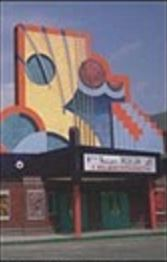

Protesting that he was “put up to the whole thing" by a local gang. Martin McFly. Junior. l7. was arrested for the theft of an undisclosed cash amount by Hill Valley Police this morning. The theft. which was accomplished with a stolen degaussing unit. took place at the Hill Valley Payroll Substation on 9th Street at exactly l:28 AM. this morning, Police were sketchy about details. but apparently McFly setoff a pressure sensitive alarm system which alerted authorities MacFly. the son of Martin and Jennifer MacFly of Hill-dale. accused members of a local gang for putting him up to the crime. Griff Tannen.
Thursday, october 22, 2015
NewsLine
A quick read on the news
thumb bandits strike: after amputating thumbs of hospital patients.
man killed by falling litter: thrown from a hovering vehicle.
swiss terrorist: maybe real, say CIA officials WORLD page 5.
shredding for charity is a way to raise money and save threes Section D.
president says she's tired of reporters asking the same question NATION page 4.
kelp price increase is likely due to pollution of the South Pacific Section C
pitcher suspended for bionic arm use without calibration. Section B
jaws without bite is the review of Jaws 19 Section D
activists mobilize to ban alphabet sup: Group leader J.Williams, says "this is an offensive product which contains slurs and profanity in every can"
slamball playoffs begin tihs evening in Denver, televised on 183, Section B
woman asphyxiates in self adjusting jacket. Manufacturer says safety system was overridden; tightening a garment is no substitude for dieting.
activists mobilize to ban alphabet sup: Group leader J.Williams, says "this is an offensive product which contains slurs and profanity in every can"
Youth jailed
Martin McFly Junior Arrested for Theft
Youth gang denies complicity
Cholesterol may by cancer cure
A controversial new study by scientists at the
International
Center
for Alternative Scientific Theory (ICAST) suggests that cholesterol
may hold the key to curing cancer. The report released yesterday
sent shockwaves through the medical community. "Simply put, the results
of our preliminary research are stunning and completely unexpected." said Dr.
Leigh Quindara. leader of the study, in an exclusive interview with USA TODAY.
The experimental protocol, according to Quindara and researcher Steve Pearson.
involved two groups of rats. The control group was given a normal healthy diet.
while the experimental group was given eggs and bacon cooked in lard and
smothered
in Hollandaise sauce. At the same time, both groups were forced to breathe
polluted air laden with carcinogens that was
the equivalent of smoking three packs of cigarettes per day.
After 7 months. the control group rats all had lung tumors, while the
experimental
group did not. The cholesterol levels in the experimental group were 400%
greater than the control group, "I t's too soon to determine
if the cholesterol was a preventative or a cure," said Dr. Stephanie Winter.

3 injured when mom re-hydrates pizza slices
Despite warning labels and public service announcements about the hazards of rehydrating food, three people, including two children, were injured yesterday morning when Ruby Lee Dontanovich of South Hill Valley decided to rehydrate two pineapple-pepperoni pizza slices that she had hydrated the night before. "My four kids were all screaming for pizza for breakfast, but we only had two slices left over from dinner. So. I wanted to double the portions by rehydrating them? Reydrating food can cause an abnormal buildup of water pressure within the hydrator, and if the device is clogged or improperly vented, an explosion can result. The hydrator was in an inappropriate location, and the door was apparently forced shut to override the safety mechanism," said Hill Valley Police Detective. Dana Mitchell. who is a police expert in hydration accidents. "The entire unit blew apart, and Dontanovich and two of her children were hit by flying debris from the exploding device, similar to shrapnel.
Hollywood to remake "A Match Made in Space"
Academy Award-winning director Robert Zetneck (Forrest Gump. tilho Framed Roger Ibbbit) IA11 direct a new version of George McFly's classic 1985 science fiction novel. A Match Made in Spate, USA TODAY has learned. Zemeckis, a long-time fan of McFly's first novel, has long dreamed of directing a film version of the best seller, and has been maneuvering to secure the film rights for years.. In an exclusive interview with USA TODAY, Zemecki• disclosed he had originally campaigned to direct the project as soon as he read the novel. "At the time, I thought A Match Made in Space was the best science fiction novel of the decade, and its stature has only increased over t he years. I had a lot of meetings back in the day, only to be told that no one thought I could handle a film with a lot of special effects.:' says the director. whose latest production. The Walk is currently prnering rave reviews from critics and audiences alike. Zemeckis' perseverance in his pursuit to direct his dream project stems from his own personal philosophy.

Public more gullible than ever
A new study from the Sam Houston Institute of Technology concludes that the public is easily fooled by bogus news stories and made-up research from fictitious institutions. In a study conducted by Chad Stern. 5200 people' of all age groups were shown a USA TODAY newspaper full of fictional news art is des and studies, many in-spired by the 1989 motion picture Back to the Future Part //. 63% of the sample thought that some of the in-formation was accurate; 18(70 believed that everything was accurate; while the remaining 29% got the joke immediately.